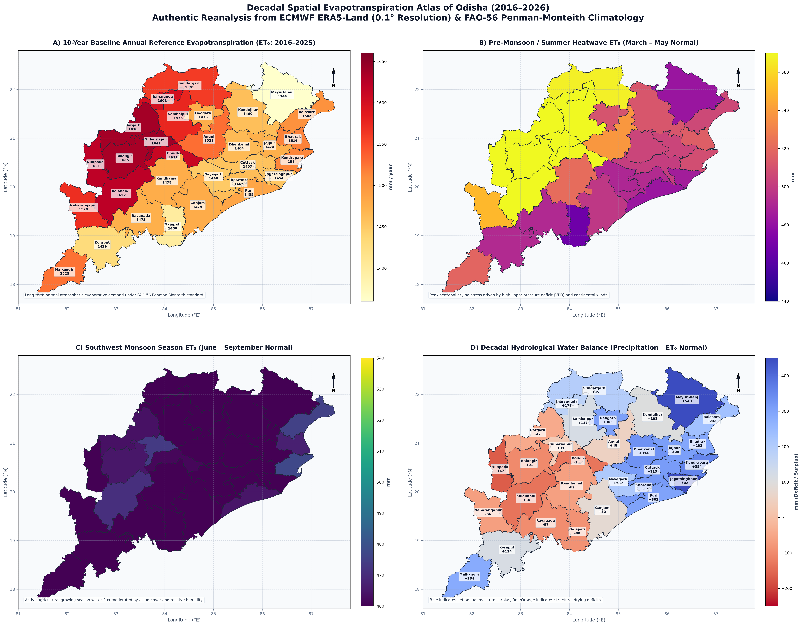

Decadal (2016–2026) Micro-level GIS Decision Portal across 30 Districts and 314 Administrative Blocks.
Calculates real-time crop evapotranspiration ($ET_c = K_c \times ET_0$) and freshwater savings for the currently selected block: Sohela.
| # | Block Name | ET₀ (mm) | P - ET₀ |
|---|
Tail-End Evaporative Conveyance Loss: In Western Odisha canals (Hirakud Bargarh canal system, Upper Indravati), ambient heat (>42°C) causes 18% to 24% of canal discharge to evaporate during March–May. Releases must add a +20% evaporative multiplier for tail-end blocks (Sohela, Bijepur, Barpali). Mandate nocturnal rotational canal operation (19:00 to 06:00) to cut convective loss by up to 35%.
Phase-out Summer Boro Paddy in Top 10 Deficit Blocks: Boro paddy consumes 6,960 m³/ha. Substituting with Mandia (Finger Millet / Ragi) or Moong (Greengram) reduces water demand to 3,450–4,060 m³/ha, returning 2,900 to 3,510 m³ of freshwater per hectare to community aquifers. Target: 60% transition in Komna, Boden, Bhawanipatna, Sohela, and Patnagarh.
Eliminating Shallow Evaporation Sinks: Western Odisha loses ~1.62m of depth to annual evaporation. Standard 2.0m ponds lose 80% of stored water. Revised engineering mandate: excavate to minimum 3.5 to 4.0 meters with bamboo/neem windbreaks on the southwest banks to suppress convective surface evaporation by 20–28%.
SPEI Metric Integration: Incorporate Vapor Pressure Deficit and daily ET₀ spikes (>8.2 mm/day) into heat action plans to detect rapid root-zone desiccation before conventional rainfall indices register agricultural drought.
Dense canopy cover in Mayurbhanj and Koraput plateaus suppresses ET₀ by up to 270 mm/yr compared to Western plains. Protecting highland canopy preserves the natural orographic sponge that feeds Odisha's major river basins (Subarnarekha, Baitarani, Kolab).

Department of Water Resources & Department of Agriculture & Farmers' Empowerment
Created by Gourab Kumar Swain • Decadal Baseline: 2016–2026 ECMWF ERA5-Land Penman-Monteith Reanalysis
| Administrative Block / District: | -- | Hydrological Tier: | -- |
| Annual Reference ET₀: | -- mm | Annual Precipitation: | -- mm |
| Pre-Monsoon Summer ET₀: | -- mm | Net Water Balance: | -- mm |